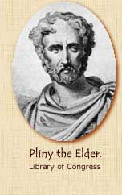
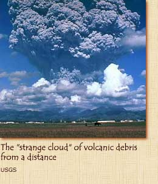

|
 Roamin'
the Empire: Pliny, first let us thank you for agreeing to do this
interview. Your experience must be very painful to talk about.
Pliny: Yes, although my shocked soul recoils, my tongue shall
tell the tale of the destruction of this most beautiful region.
Roamin': Where were you when the eruption began?
Pliny: I was with my mother in Misenum, a town across the
Bay of Naples at the foot of Mount Vesuvius. We were staying at
a villa with my mother's brother, Pliny the Elder, commander of
the Roman fleet at that place.
Roamin': Did you have any warning that Mount Vesuvius was about
to erupt?
Pliny: There had been earthquake shocks for several days.
These are so common in the region, however, that no one gave them
any thought, even though the area had experienced a destructive
earthquake around the time of my birth.
Roamin': How did you learn about the eruption?
 Pliny:
On the afternoon of August 24, my mother pointed out to my uncle
a strange white cloud
off to the east. It extended straight
up from the earth, then spread out into what looked like branches,
so that it resembled a gigantic pine tree. It was so far away we
could not tell from which mountain it was rising. My uncle, who
was greatly interested in such phenomena, decided to investigate
more closely and ordered a boat to be made ready. He invited me
to go with him, but I chose to stay behind and work on a composition
he had assigned to me.
Roamin': So homework saved your life!.
Pliny: Remarkably, yes.
To read about the eruption of Vesuvius, click on Horror
and Heroism.
To return to the main menu, click on Vesuvius
Blows Its Top.
|